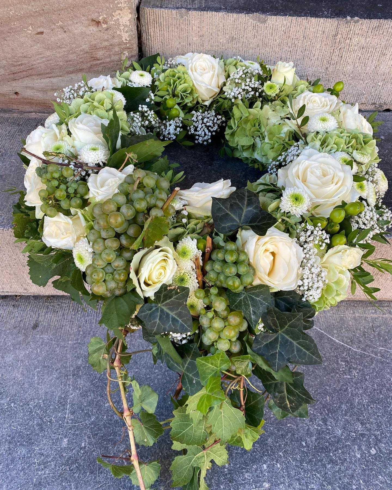
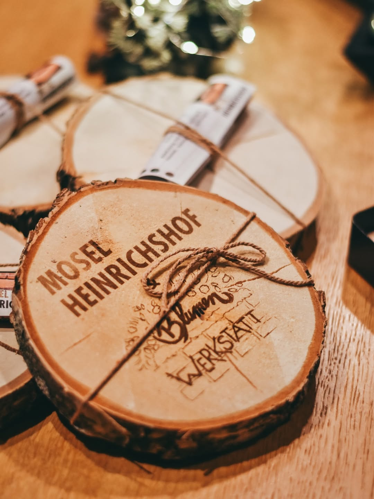

Leistungen
Floristik für jeden Anlass
Handgebundene Sträuße, Hochzeitsfloristik, Trauerfloristik und kreative Workshops. Alles mit Herz und Leidenschaft.
Handgebundene Sträuße, Hochzeitsfloristik, Trauerfloristik und kreative Workshops. Alles mit Herz und Leidenschaft.

Ein Geburtstagsgruß, der sprachlos macht. Ein Dankeschön, das mehr sagt als tausend Worte. Ein Glückwunsch zur neuen Wohnung.
Unsere handgebundenen Sträuße und Gestecke werden täglich frisch gebunden und individuell nach Ihren Wünschen zusammengestellt. Ob klassisch elegant, farbenfroh modern oder zart romantisch, wir finden die perfekte Komposition für jeden Anlass.

Ihr schönster Tag verdient Blumen, die perfekt zu Ihnen passen. Von der Brautstraußidee bis zur vollständigen Dekoration des Trauorts.
Carina arbeitet eng mit Brautpaaren zusammen, um jeden Traum in florale Realität umzuwandeln. Wir kümmern uns um Brautstrauß, Kirchenschmuck, Tischdekoration, Haarschmuck für die Braut und vieles mehr. Alles aus einer Hand, alles mit Herz.

In schwierigen Momenten möchte man die richtigen Worte finden. Blumen können das, was Worte oft nicht können: Gefühle ausdrücken.
Unsere Trauerfloristik ist geprägt von Einfühlsamkeit und Respekt. Wir schaffen florale Arrangements, die Würde und Mitgefühl ausstrahlen, von klassischen Kränzen bis zu modernen Gestecken. Carina nimmt sich Zeit für Sie und verstehen Ihre Trauer.

Florale Dekoration schafft Atmosphäre. Ob Firmenfeier, Eröffnung, Jubiläum oder private Party: Wir verwandeln Räume in florale Kunstwerke.
Mit Gestecken, Blumenmauern, Eingangsdeko und Tafeldekorationen gestalten wir die perfekte Kulisse für Ihren Event. Carina berät Sie zu Farben, Stilrichtungen und dem passenden Budget für Ihre Veranstaltung.

Lernen Sie von Carina, wie Sie selbst wunderbare Sträuße und Gestecke gestalten. Die perfekte Aktivität zu zweit, mit Freunden oder Familie.
Unsere Workshops finden regelmäßig im Weingut Heinrichshof in Zeltingen-Rachtig statt. Sie erlernen florale Grundtechniken, Farblehre und Designprinzipien, während Sie wunderschöne Blumenarrangements selbst schaffen. Mit Moselwein und kleinen Snacks als Begleitung.
Seit 2018 widmen wir uns mit vollster Aufmerksamkeit dem klassischen Floristik-Handwerk. Jedes Arrangement ist ein Unikat.
Wir arbeiten mit regionalen und internationalen Lieferanten zusammen und garantieren höchste Frische und Qualität.
Carina berät Sie persönlich bei jedem Projekt. Ihre Wünsche und Gefühle stehen im Mittelpunkt.
Keine Standardarrangements: Wir schaffen maßgeschneiderte Lösungen für Ihren speziellen Anlass und Ihre Wünsche.
Mit über 25 Google-Bewertungen und 5 Sternen ist Blumen Werkstatt eine vertrauensvolle Adresse in der Moselregion.
Kostenlose Lieferung in Zeltingen-Rachtig. Für andere Orte in der Moselregion berechnen wir transparente Lieferkosten.
Für alltägliche Sträuße und Gestecke können Sie gerne spontan vorbeikommen oder anrufen. Für Hochzeiten, größere Events und individuelle Projekte empfehlen wir mindestens 4 bis 6 Wochen Vorlaufzeit. So haben wir genug Zeit, Ihre Wünsche perfekt umzusetzen und die schönsten Blumen auszusuchen.
Ja, wir liefern in Zeltingen-Rachtig kostenfrei. Für Orte wie Bernkastel-Kues, Traben-Trarbach und andere Orte in der Moselregion bis ca. 30 Kilometer fallen geringe Lieferkosten an. Sprechen Sie uns einfach an oder schreiben Sie uns per WhatsApp.
Aber natürlich! Individuelle Sträuße sind unsere Spezialität. Rufen Sie uns an oder schauen Sie in der Werkstatt vorbei. Carina berät Sie persönlich und bindet Ihren Strauß nach Ihren genauen Wünschen, Lieblingsfarben und Anlässen.
Die Kosten für einen Brautstrauß sind abhängig von Größe, Blumenwahl, Saison und den speziellen Wünschen. Brautsträuße starten bei ca. 80 Euro. Wir erstellen gerne ein Angebot für Sie. Kontaktieren Sie uns unter +49 178 136 1809 für eine unverbindliche Beratung.
Die Grabpflege ist nicht unser Kerngeschäft. Wir konzentrieren uns auf Trauerfloristik wie Kränze und Gestecke. Für langfristige Grabpflege können wir Sie gerne an spezialisierte Betriebe in der Region weiterempfehlen.